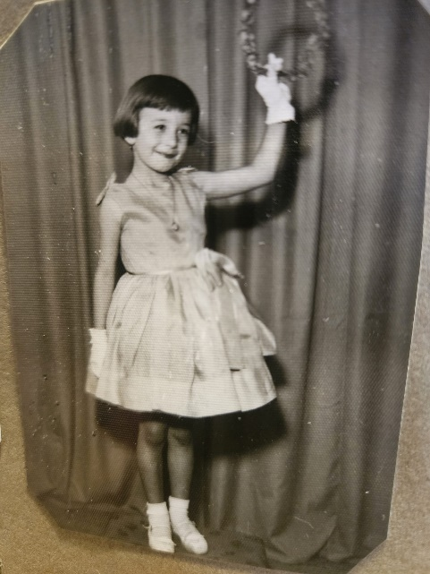
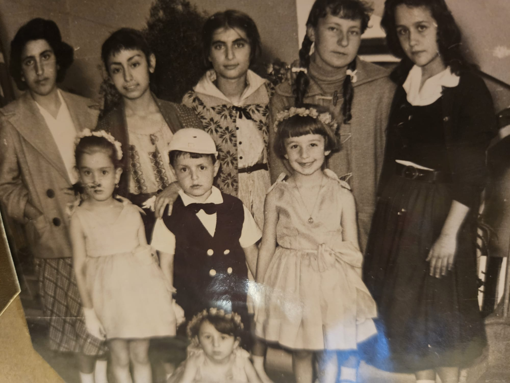

---
---

<main>
  <p>Merhaba Canım Çocuklar,</p>

  <p>Bugün 23 Nisan 2026 Ulusal Egemenlik ve Çocuk Bayramı hepinize kutlu olsun.   Bir bayram gününde sizlerle güzel şeyler konuşmak istiyorum.  Biraz zorlandım, ben de tam 68 yıl önceki çocukluğumdaki bir 23 Nisan’ı paylaşayım istedim.  Okula, Ankara’daki Demirlibahçe İlkokulunda başladım. Öğretmenimizin ismi Müşerref Filibeligil’di. Sevgili öğretmenimiz Bayram hazırlığına yaklaşık 1 ay önce başladı; anne ya da babamızın okula gelmesini istedi.  23 Nisan kutlamaları konusunda konuşmuşlar, biz de zaten “En Büyük Bayram” olan ve biz çocuklara armağan edilen bu özel güne ilişkin kutlama hazırlıklarına çoktan başlamıştık. Kırmızı beyaz krapon kağıtlarıyla “kedi merdiveni” denilen süsler, Atatürk resimleri ve bayraklarla sınıfımızı süslemiştik.</p>

  <p>Birkaç gün sonra evimize çok güzel pembe bir kumaş geldi.  Yanında siyah, beyaz kumaşlar da vardı. Annem çok güzel dikiş dikerdi. Dikişlerden artan küçük kumaşlar da benim olur, ben de onlardan kendimce bir şeyler dikerdim.  Bu kez gelen kumaşlardan bayram giysilerimizin dikileceğini öğrenince çok sevindim çünkü pembe organze kumaşa bayılmıştım.  O akşam kumaşı yatağıma yakın koyarak uyudum. Annem o kumaşlardan 3 kız çocuk, bir de erkek çocuk giysisi dikti.  Öğretmenimiz sınıfımızdaki tüm velileri kimseye sezdirmediği bir dayanışma içine sokmuştu. Annemin diğer giysileri kime diktiğini hiç bilemedim Bize keyfi ve güveni yaşatan, hepimizin eşit koşullarda olduğumuzu hissettiğimiz bir hava vardı sınıfımızda. Sınıfımızın kızlarının giydiği ve benim bugüne kadar hiç unutmadığım giysimi sizinle paylaşayım.</p>

  <div style="text-align: center;">
    
  </div>

  <p>Sınıfımda hepimiz küçük kelebekler, çiçekler gibi uçuşuyorduk.  Çok heyecanla, coşkuyla kutlamalar yaptık.  Marşlar söyledik, şiirler okuduk.  Atatürk’e teşekkürlerimizi ilettik, onu ne kadar çok sevdiğimizi paylaştık.  Atatürk’ü andıkça benim içim hep coşkulanır ve gözümden yaşlar akar.  O gün de öyle oldu. Öğretmenim “ne olmasını isterdin?” diye sorunca “Atatürk’e sarılmak isterdim” dedim.  Canım öğretmenim “Sizler hepiniz Atatürk’ün çocuklarısınız.  Haydi hepiniz birbirinize sarılın, o zaman Atatürk’e sarılmış gibi olacaksınız” dedi.  Şimdi hala arkadaşlarıma, çocuklara, dostlarıma sarıldığımda içimde bir güven ve coşku hissederim.</p>

  <p>Okuldaki törenimiz bittikten sonra öğretmenimiz “Çocuklarım, şimdi çok önemli bir görev sizi bekliyor” dedi. Hepimiz çok şaşırdık ve heyecanlandık.  Sınıfımıza üzerinde Kızılay ve Çocuk Esirgeme Kurumu amblemleri olan teneke kutular geldi.  Bir de pul büyüklüğünde üzerinde yine aynı amblemlerin basılı olduğu küçük kağıtlar ve bir kutu da toplu iğne vardı.  Öğretmenimiz “Siz çok güzel bir bayram kutladınız, şimdi sizin sahip olduğunuz olanakları bulamayan arkadaşlarınız için, insanların katkılarını toplayacaksınız” dedi.  Aşağıdaki resimde gördüğünüz güzel ablalarla birlikte Ankara’nın en bilinen ve güzel caddesi Kızılay’a bizi götürdüler.  Onlar gibi olmaya çok özendiğim bu ablalar bizim biraz uzağımızdan bize göz kulak olacak, ama tüm iletişimi biz kuracaktık.  Sokakta yürüyen insanları önce selamlayacak, bayramlarını kutlayacak yakalarına rozetleri takacak ve eğer isterlerse kumbaralara yardımlarını alacaktık.  Öğretmenimiz gitmeden bize çok sıkı bir biçimde asla yalvarmamızı, bağışta bulunmayanlara ters davranmamızı öğütledi ve bize çok güvendiğini söyleyerek bizi uğurladı.  Şimdiki aklımla baktığımda ne kadar onurlu ve saygılı bir biçimlendirme olduğunu anlıyorum, içim titriyor.</p>

  <p>Kızılay Ankara’nın en gözde, en önemli semtiydi.  İsmini çok güzel bir yapı olan Kızılay binasından alıyordu.  Başkentin merkezinde yardımlaşmanın, dayanışmanın, birbirine sarılabilmenin simgesi olan binanın olması bana çok anlamlı gelmiştir.</p>

  

  <p>Kızılay Caddesinde kaç tur attığımızı anımsamıyorum ama rozetlerimizi bitirmiş, kumbaralarımızı doldurmuştuk.  Bazı amcalar ve teyzeler birkaç kez rozet taktırıp, kumbaralarımıza para atmıştı. Yeni ayakkabılarımın başlangıçta ayağımı sıktığını anımsıyorum, sonrasında acıyı hiç hissetmedim.  Ayağımın ne hale geldiğini eve gittiğimde, çoraplarımın kırmızılığından anladım. O kadar mutluydum ki başka hiçbir şeyi duyumsamıyordum.  Canım arkadaşlarımla, tanışma olanağı bulmadığımız arkadaşlara bayram armağanı toplamıştık. Atatürkümüze göre hepimiz Ülkemizin “Küçük Hanımları ve Küçük Beyleriydik.  Bizler, hepimiz geleceğin bir gülü, yıldızı ve ikbal ışığıydık. Memleketi asıl ışığa boğacak olan bizdik. Kendimizin ne kadar önemli, değerli olduğumuzu düşünerek ona göre çalışacaktık. Bize düşen çok şey olduğunu biliyorduk ve bugüne kadar öyle davrandık.</p>

  <p>Sevgili Çocuklar ben çok uzun yıllardır çocuk ruh sağlığı alanında çalışıyorum.  Bu alanda zorlukları olan çok çocukla birlikte oldum, oluyorum.  Sağaltım konusunda benimsediğimiz en temel ilke, eğer olanak verilirse tüm çocukların kendilerini iyiye götürecek içlerinde var olan gücü kullanabilecekleri ve bu güçle sağlıklı, kendilerinden hoşnut, mutlu sevgisini paylaşabilen, başarılı, saygı gören erişkinler olabileceğidir.  Bugüne dek bunun binlerce örneğine tanıklık ettim. Sizlere bu yolda olanaklar sağlamak ağırlıklı olarak erişkinlerin görevidir.  Size düşen en önemli görev de kendinizin, içinizdeki gücün bilincinde olmak, Atatürk gibi ilkelerinin doğruluğunu kanıtlamış liderleri örnek almak, iyilik ve bilim yolunda yılmadan yürümektir.  O zaman çok daha güzel bir dünya yaratacağınıza eminim, o dünya sizin eseriniz olacaktır.</p>

  <p>Bu güzel Bayramınız kutlu olsun.</p>

  <hr />

  <h2 style="text-align:center">Zor Zamanlarda Öğretmen Olmak</h2>

  <p style="text-align:center">Prof. Dr. Ferhunde Öktem</p>

  <p>Çok Sevgili Öğretmenlerimiz,</p>

  <p>Yeni bir dönem başlıyor. Bu kez geçmiş dönemlere kıyasla daha zor görevler bizleri bekliyor.  Kafamızdaki sorular çok çalışmadığımız yerden geldi.  Sınıfımıza konuk gelen çocuklarımıza nasıl davranacağımızı tam bilmiyoruz, bu durum bizi korkutuyor.  Yetkinliğimizi yitirmiş gibiyiz.  Biz erişkinler bu ağır yıkımla henüz başa çıkamazken çocuklarımıza nasıl yardımcı olabileceğiz?</p>

  <p>Şimdi durun ve derin bir nefes alın.  Biraz söyleştikten sonra içinizdeki gücün farkına varacağınızı biliyorum.  Çünkü ben en çökkün, en yılgın olduğum zamanlar öğretmenlerle, çocuklarla birlikte olduğum zaman içimde yeni umutların yeşerdiğini, farkında olmadığım gücümün bir yerlerden pırıldamaya başladığını, birliktelikten oluşan güçle yeni çözüm yollarını oluşturabildiğimizi biliyorum, pek çok kez bunu yaşadım ve deneyimledim.  Şimdi sizinle olmak istememin de nedeni bu.</p>

  <p>Sevgili Öğretmenlerim, sizlerle çok kısacık ama etkisi çok büyük bir bilgiyi paylaşmak isterim. Yaşama başladığımız ilk andan oluşan bağlanma biçimimiz sonraki günler için belirleyici olmaktadır. Ne oluyor bağlanma sırasında?</p>

  <ol>
    <li>Aynalama: Annenin yüzü bebek için bir ayna görevi görür.  Bebek annenin yüzünde keyifli, mutlu bir ifade gördüğünde kendinin iyi olduğunu ve annenin yüzünden de bunun yansıdığına inanır.  Bu dosya o zaman açılır ve bütün yaşamımız süresince bu yansımayı bir kaynak olarak kullanırız.  Hep bizim için önemli olan kişilerin yüz ifadesini kollarız.  Bizim olayları anlayabilmemiz için karşımızdaki yüz ifadesi bir dayanak oluşturur.</li>

    <li>Temel Güven: Bebek gereksinimlerinin karşılanmasıyla kendini güvende hisseder. “Ben gereksinimlerimi anlatabiliyorum ve onlar bunu anlayabiliyor ve giderebiliyor, o halde ben güvendeyim” Bu dosya da doğumda açılır ve tüm yaşamımızda devam eder.</li>

    <li>Aidiyet Duygusu: Bu kucak benim.  Bu battaniye benim. Bu benim evim, gibi. Sağlıklı aidiyetler oluşturduğumuzda kendimizi daha güçlü ve güvende hissederiz</li>
  </ol>

  <p>Sevgili Öğretmenlerim, bu bilgiyi neden paylaştım? Çünkü okula başlayan her çocukta sizin yüzünüz onlar için ayna görevi görecek, güven duygusunu sizden alacak, siz onun öğretmeni, bu sınıf onun sınıfı olacaktır.  Okula başlayan her çocuk öğretmen olmayı ister, güzel öğretmenler onlara rol model olacaktır.</p>

  <p>Sevgili Öğretmenlerim, sınıfınıza gelen öğrenci sizin tarafınızdan fark edilmek isteyecektir, sizinle kuracağı göz ilişkisi bunun kanıtı olacaktır.  Adıyla seslenilmesi kabul edildiğinin göstergesidir. Özellikle zor günlerde kabul edildiğini görmek, acıyarak değil ama sevgi dolu bir yüz ifadesi ile aynalanmak ve yetkin bir erişkin tarafından güvende olduğu duygusunu yaşatmak sağlam bir gelecek oluşturmak için önemli bir adımdır.</p>

  <p>Okulun açıldığı ilk gün ne olacak?  Sınıfınızın öğrencileri koşuşarak kendi arkadaşlarına kavuşma coşkusunu yaşayacaklar.  Yeni gelen öğrencinizin ise bu coşkuyu yaşayacak arkadaşı yoktur, kaygısı ise çoktur. Nasıl bir kayıpla gelmiştir? Ailesinden yitirdikleri var mıdır? Burada yanında kimler vardır ve nerede kalıyorlardır? Kitapları ve defterleri alınmış mıdır? Aslında sevgili öğretmenlerim bu bilgilerin tümünün sizde bulunması gerekmektedir. Bunu talep edin ve oluşturun.</p>

  <p>Bir konuk geleceği zaman evimize önceden çeki düzen veririz, ikramlarımızın olup olmadığını kontrol ederiz. Ev halkı rol paylaşımları yaparız.  Sınıfınıza gelen öğrencinize ilişkin bir hazırlık yapamadığınızı duyuyorum, bu da sizi biraz kaygılandırıyor çünkü sizin sınıfınızı da hazırlamanız gerekiyor.  Çocuklarınız yeni gelen arkadaşlarına karşı nasıl davranacaklarını bilemezler, merak ederler, rahat bırakmakla rahatsız etmek arasındaki çizgiyi oluşturamayabilirler. Konuk çocuğun varlığında sınıfı hazırlamak zordur. Okulunuzda şöyle bir uygulama herkes için kolaylaştırıcı olacaktır:</p>

  <p>Okul Müdürü yeni gelen öğrencileri ve ailelerini kendi odasında (ya da uygun bir salonda) sıcak bir biçimde ağırlar. Tüm personelin yakalarında isimleri ve görevleri vardır-Çetin Evren: Müdür, Fatma Özler: Müdür Sekreteri, Ali Yaşar: Temizlik Görevlisi gibi. Sonra çocuklara okulun önemli bölümleri tanıtılır, tuvalet, spor salonu, kantin vb. Bu yaklaşım hem çocuklara bilinen bir yerde olma güvenini aktaracaktır hem de öğretmenlere sınıflarını az da olsa hazırlama olanağı yaratacaktır. Öğretmen sınıfta daha uyumlu çocuklarla oluşturacağı küçük gruplarla yeni gelen öğrencinin nereye oturacağı, ders aralarında kimlerle olabileceği gibi düzenlemeleri yapabilecek, yedek kitap, defter, kalem vb.  sağlayabilecektir. “Bunları aile sağlasın” diyebilirsiniz. Unutmayın ki bu aileler de ciddi kayıplarla buraya geldiler, düşünemeyebilirler.</p>

  <p>Öğrencileriniz, yeni gelen arkadaşlarının öyküsünü çok merak ederler.  Bu konuda onları durdurmanız sizin işinizi kolaylaştıracaktır. “Sevgili çocuklarım, arkadaşınıza ilişkin merak ettiğiniz bir şey olursa gelip bana sorun. Ona sorduğunuz bazı sorular onu üzebilir” bilgisini mutlaka paylaşın ve izleyin.</p>

  <p>İlk günler ciddi bir biçimde ders yapmayın. Sizin sınıfınız düzey olarak konuk öğrencinizden önde olabilir. Bunun vurgulanması çocuğun kendini değersiz hissetmesine yol açabilir. Müzik, resim gibi sanat etkinlikleri, spor, kağıt katlama gibi uğraşlar, keyifli zeka bilmeceleri tüm çocuklara iyi gelecektir. Sınıfta sessiz, çökkün oturma çocukların kaygılarını çok yükseltecek, baş edemediği duyguların ortaya çıkmasına yol açabilecektir.</p>

  <p>Ödevleri çok az ve farklı biçimlerde verin. “Çevrenizden en sevdiğiniz yemeğin nasıl yapıldığını öğrenin” Biz de sınıfta bunun ne kadarının protein, ne kadarının lif vb içerdiğine bulmaya çalışalım” gibi kullanılır bilgiler ödevleri oluşturalım. Ölçü tahminleri yaptırabilirsiniz: Tahtamızın boyu ne kadar? Tahtaya yazdığım E harfinin eni kaç cm gibi. Ali ve Efe birbirinize bakmadan tahtaya 25cm birer çizgi çizin.  Bu tür etkinliklerin çocuklarınızın zihinsel becerilerini de artıracağını söylemek isterim.</p>

  <p>Sınıfınızda “Kol” çalışmalarını başlatın.  Bu etkinliklerin çocuklarda sorumluluk ve yurttaş olma becerilerinin gelişiminde eşsiz katkıları olacaktır.</p>

  <p>Öğretmenler arasında dayanışma grupları oluşturun. Sınıfta beklemediğiniz biçimde bir kriz çıktığında, örneğin sorunlu bir öğrenci -bu yeni gelen de olabilir, eski öğrenci de- siz bu öğrenci ile uğraşırken 2C sınıfı öğretmeninin size yardımcı olacağını bilmek, işinizi kolaylaştıracaktır.</p>

  <p>Konuların işlenmesi sırasında sınıfınızın düzeyine göre TUBİTAK Bilim Çocuk ve Meraklı Minik dergilerindeki işleniş biçimlerinin yardımı olacaktır.</p>

  <p>Sevgili Öğretmenlerim, pek çok yerde “çocuklardan duygularını ifade etmelerini isteyin” biçiminde önerilere rastlıyorum.  Bu beni korkutuyor.  Nasıl bir duygu çıkacağı, sınıfın geri kalanının nasıl etkileneceğini bilemiyoruz. Türkiye”nin en çok tanınan Çocuk Psikiyatristi hocamız Atalay Yörükoğlu’nun bize en çok vurguladığı yaklaşım “Toplayamayacağın sandığı deşme” sözüdür.  Ağır travma yaşamış bir çocuğun duygu ve yaşantısından ne çıkacağını bilemeyiz.  Biz terapistlerin bile denetimli ortamlarda ele almakta zorlanacağımız bir duyguyu siz sınıf ortamında ele almakta çok zorlanırsınız, diğer öğrencilerinizi toparlamak çok güç olabilir.</p>

  <p>Sınıfa sadece öğretmenin açabileceği “Soru ve paylaşım kutusu” koymanız ve yanıt panosu hazırlamanız size güzel iletişim olanakları sunacaktır.</p>

  <p>Sağlıklı, hakça ve sıcak bir disiplin, güven ortamı oluşturmak için şarttır. Koşulların bilindiği bir ortamda yaşamak hepimizi rahatlatır.</p>

  <p>Sevgili Öğretmenlerim, Cumhuriyetimizin 100. Yılında, yine siz Cumhuriyet öğretmenlerine çok iş düşüyor. Yeni nesil yine sizin eseriniz olacaktır. Hep birlikte aklın, bilimin ve vicdanın doğrultusunda çok güzel kazanımlara ulaşacağımıza eminim. Yeni sorular ve katkılarınızla yeni çözümler oluşturabiliriz. Yeniden buluşalım, çözümlerimizi paylaşalım, göreceksiniz daha güçlü olacağız.</p>

  <p>Yeni döneminiz aydınlık ve verimli olsun. Çocuklarımız size emanet. Kalın sağlıcakla,</p>

  <p>Prof. Dr. Ferhunde Öktem</p>
</main>
